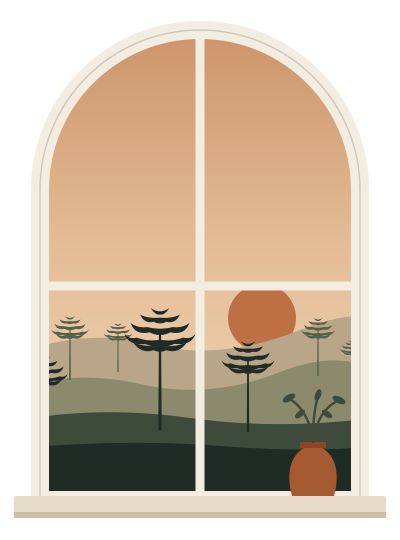

Gestão de Airbnb · Curitiba
Tem Airbnb em Curitiba? A TOCA cuida.
Vale · 1 diagnóstico
Diagnóstico gratuito do seu Airbnb
Aponte a câmera e fale com a TOCA no WhatsApp. Sem compromisso.


Gestão de Airbnb · Curitiba
Vale · 1 diagnóstico
Diagnóstico gratuito do seu Airbnb
Aponte a câmera e fale com a TOCA no WhatsApp. Sem compromisso.
Suporte e comunicação durante a hospedagem.
Chegada e saída organizadas e acompanhadas.
Coordenação entre uma estadia e outra.
Imóvel pronto para o próximo hóspede.
Necessidades e imprevistos resolvidos.
Os detalhes que mantêm tudo funcionando.
Operação completa ou sob medida.
(41) 99896-0730
Curitiba e região